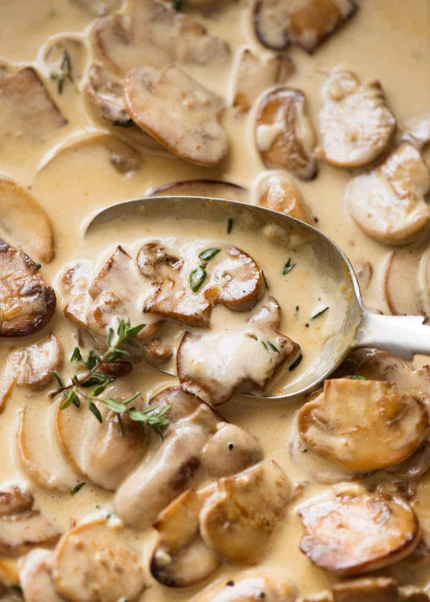

(Back to Homepage)
Mushroom Bechamel Sauce
From the Kitchen of C. Rowe

Ingredients
- 4 Tablespoons of butter
- 1 teaspoon of salt
- 1 teaspoon of pepper
- 1 medium-sized chopped onion
- 1 chopped garlic clove
- 2 chopped celery stalks
- 3 cups of chicken broth
- 2 cups of slived mushrooms
- 1 cup cream
- Roux
- 1⁄2 cup of melted butter
- 1 cup of flour
Cooking Steps
- In a large pot, melt butter
- Add onions, celery, garlic, salt, and pepper
- Cook for 10 minutes
- Add chicken broth and heat
- Make roux
- In a separate pan, melt 1⁄2 cup butter
- Add small amounts of flour, whisking as you go to a total of 1 cup of flour
- Blend roux into the large pot
- Add 1 cup of cream and more salt and pepper to taste
This dish can be frozen and can be used as a substitute for cream of mushrom soup
Enjoy!
(Back to Homepage)